Développement d'une application pour le Service Statestique Académique du Rectorat de Paris. Le Service a rencontré une situation où des élèves étaient enregistrés en double dans notre base de données. Pour remédier à cette situation, j'ai créer une application qui permet trier tout les élève conserné et ensuite automatiser un système de messagerie qui créer les courriels électronique et contacter les établissements concernés afin qu'ils effectuent les corrections nécessaires dans leurs systèmes respectifs.
- Stage de 1ère année : DAFPIC (Délégué académique à la formation professionnelle initiale et continue) au Réctorat de Paris.
Durée du stage : 6 semaine
-
1 / 16

Accueil.
2 / 16
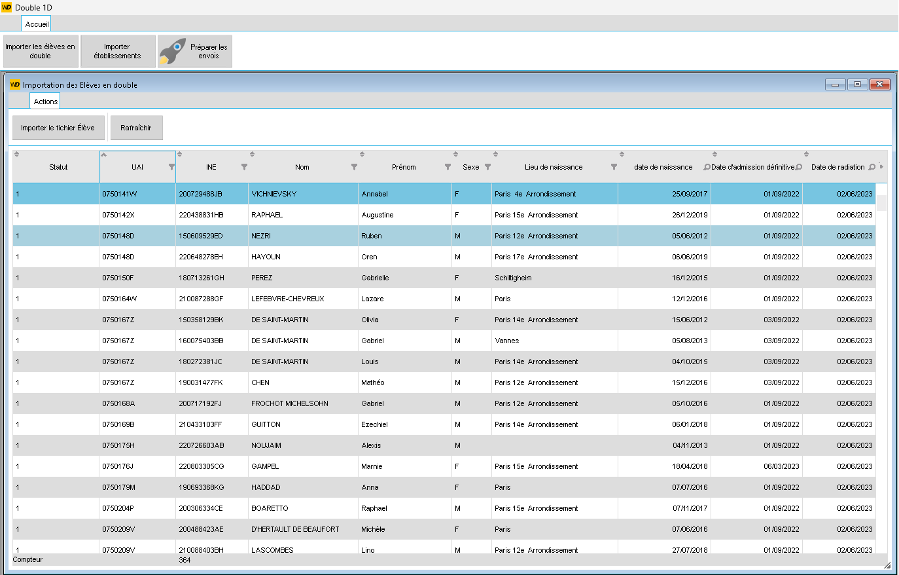
Tableau des élèves doublon
3 / 16
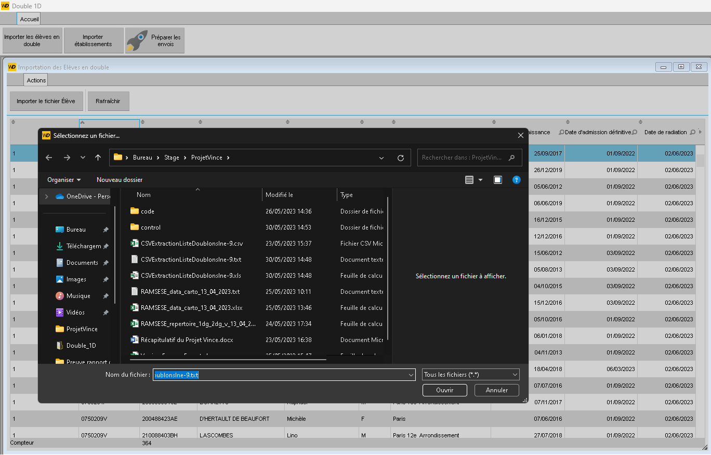
Démonstration seléction du fichier d'import (élèves).
4 / 16
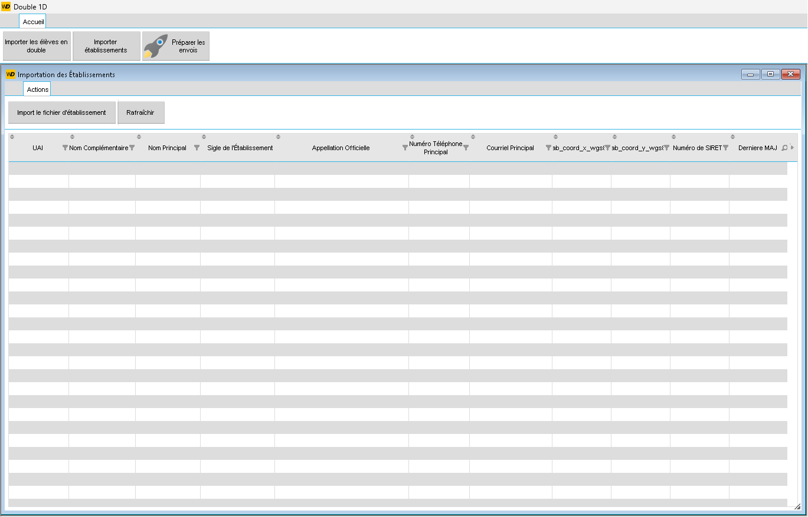
Tableau des établissements
5 / 16
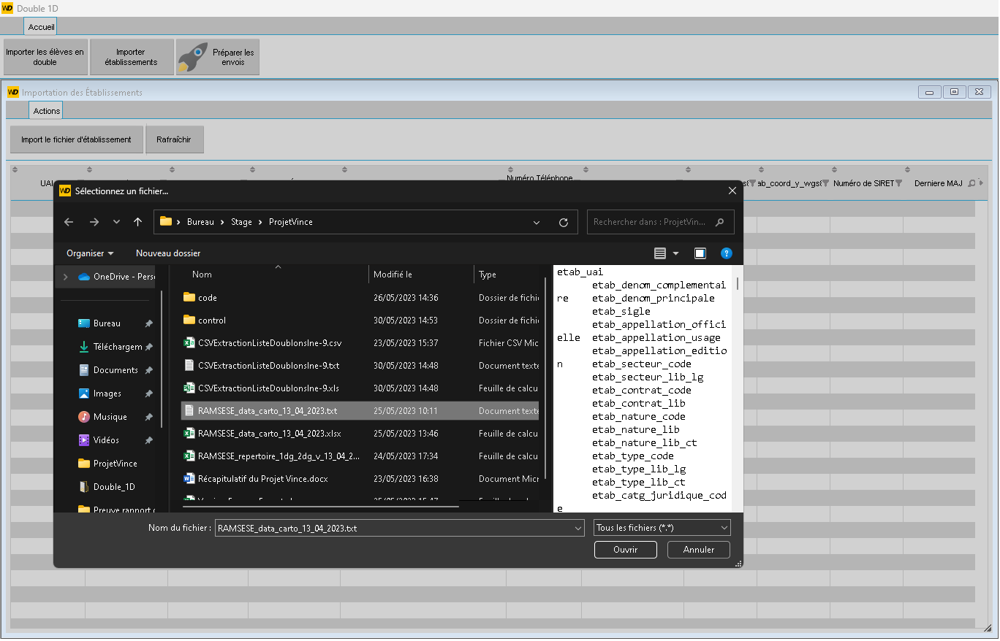
Démonstration seléction du fichier d'import (établissements).
6 / 16
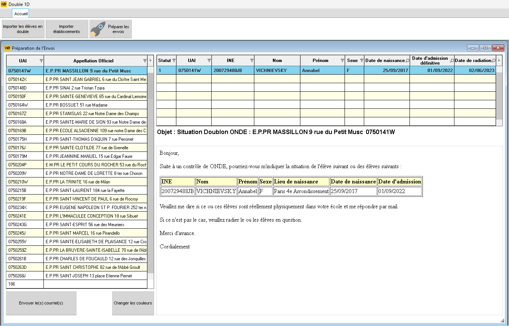
Menu d'envois des courriels éléctroniques.
7 / 16
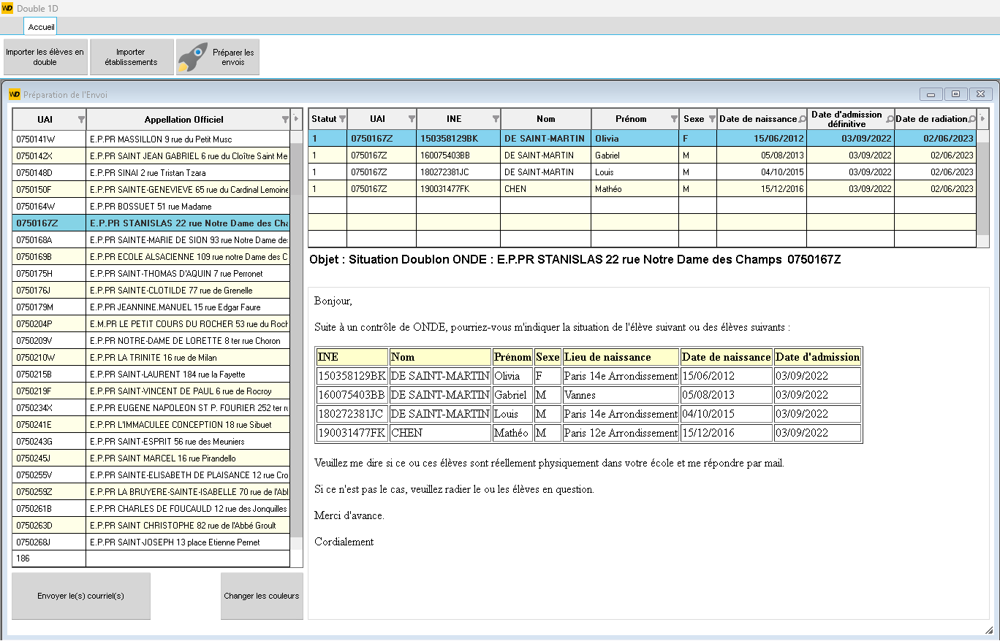
Menu d'envois des courriels éléctroniques.
8 / 16
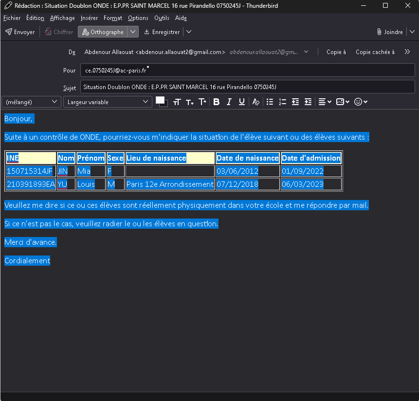
Exemple d'un mail généré automatiquement par le programme,
le courriel est rempli, avec le destinataire, l'objet, et la liste des élèves
concérné.
9 / 16
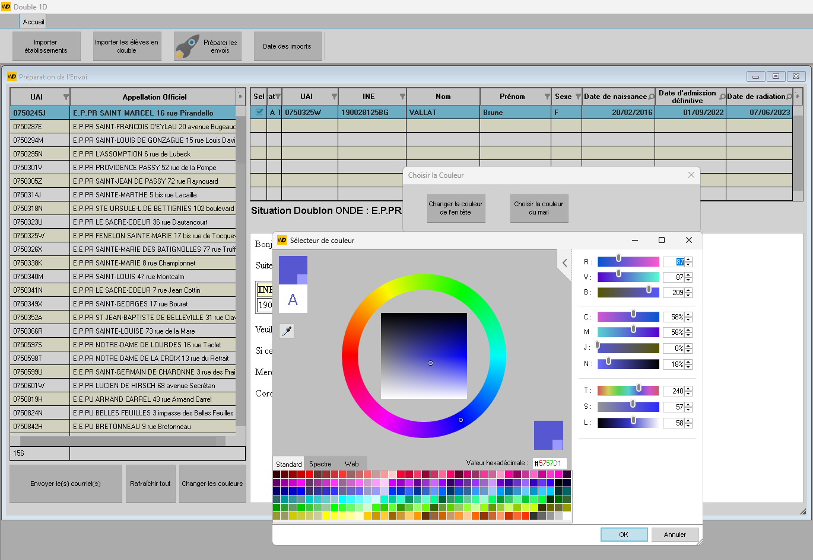
Démonstration d'un boutton pour changer les couleurs.
10 / 16
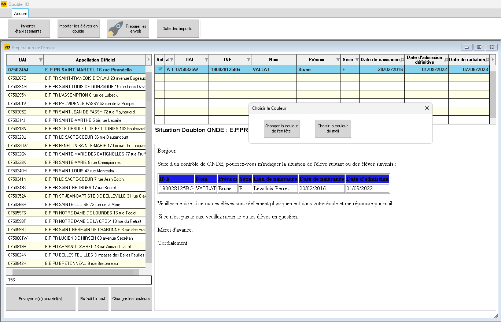
Démonstration d'un boutton pour changer les couleurs.
11 / 16
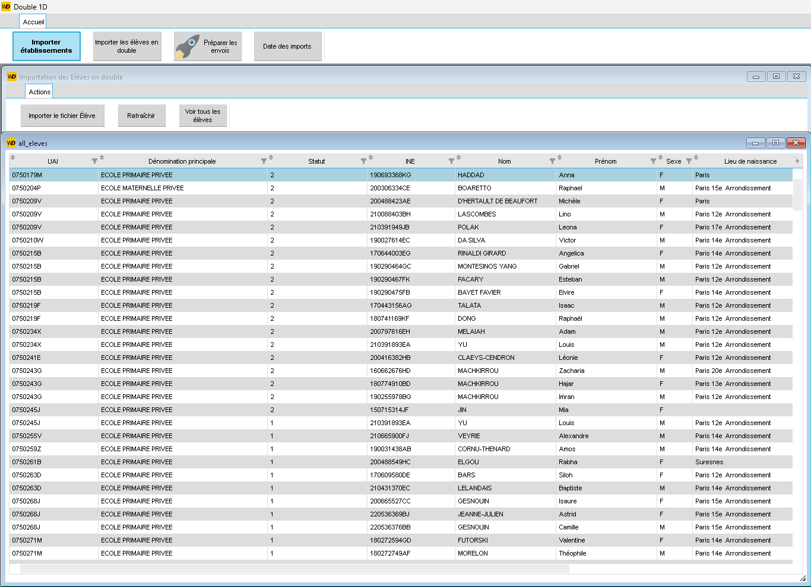
Tableau de tous les élèves, quel que soit son statut.
12 / 16
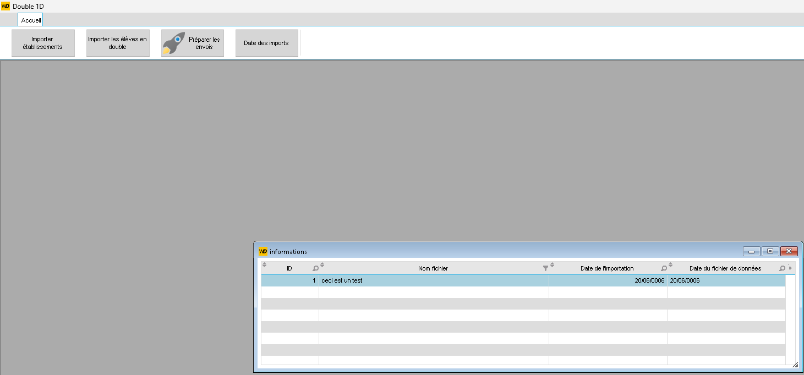
Tableau de l'histoique de toute les actions efféctuer (Envois, archivage, imports).
13 / 16
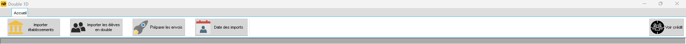
Barre des outils de l'application.
14 / 16
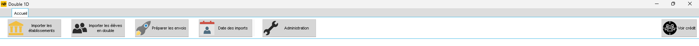
Barre des outils de l'application, evolué.
15 / 16
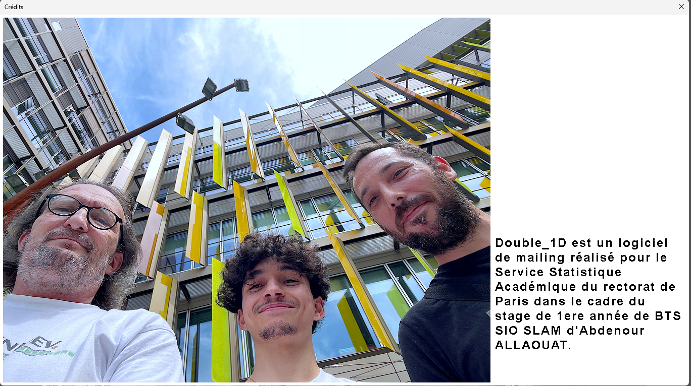
Page crédits.
16 / 16
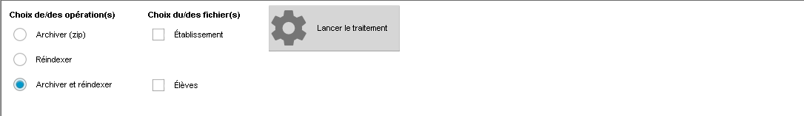
Démonstration du boutton Administration.
❮
❯